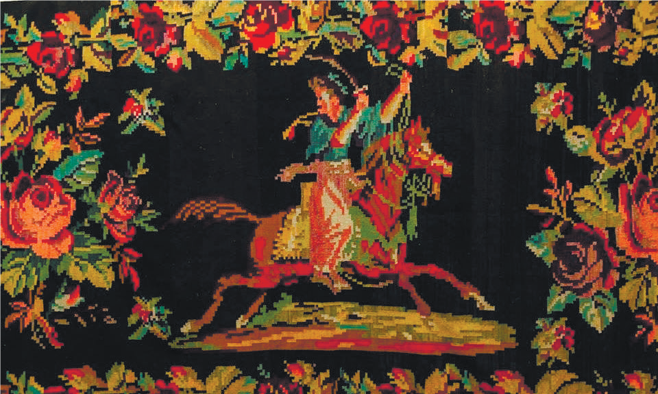
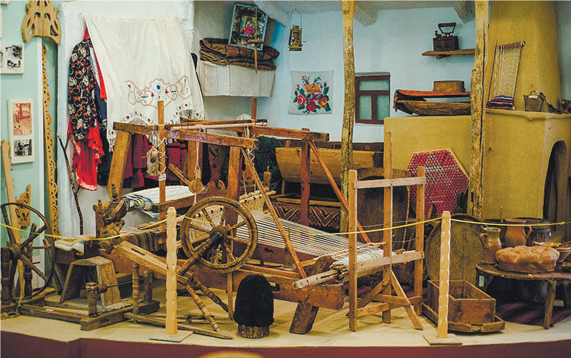
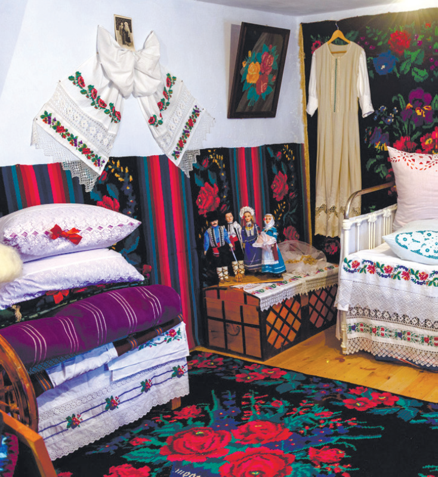
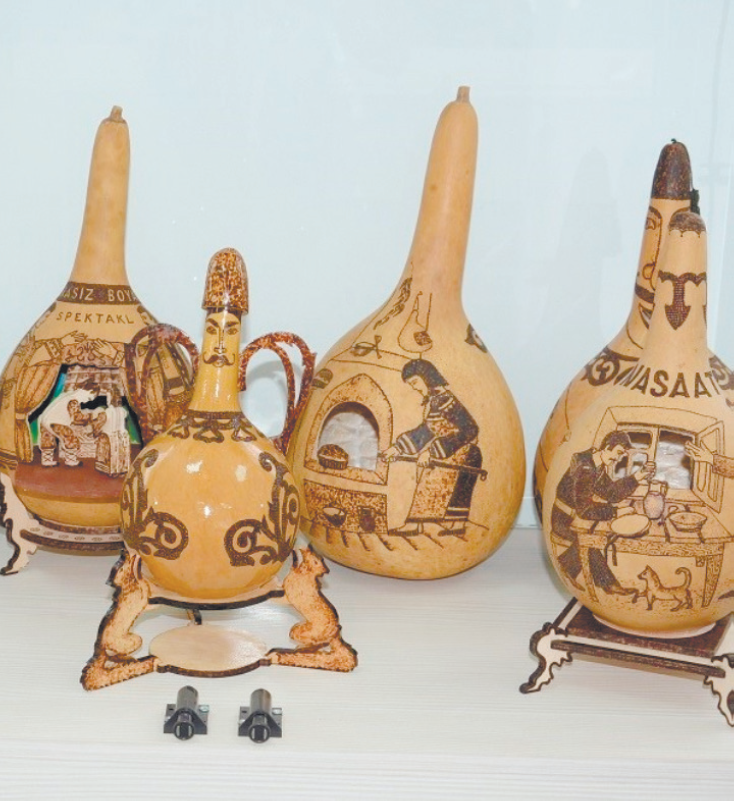
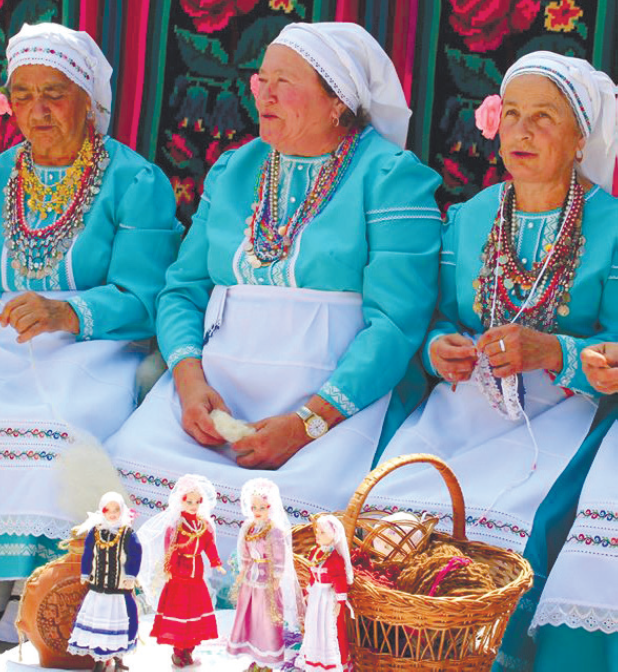

El Sanatları
Geleneksel Dokuma
“Geleneksel duvar halısı işçiliği tüm Romanya ve Moldova Cumhuriyeti’ne yayılmıştır. Kabuk dokuma köylü evinde, Ortodoks rahibe manastırlarında ve aile derneklerinde uzmanlaşmış atölyelerde uygulanmıştır. Eski zamanlarda, ağaç kabuğu esas olarak duvar dekorasyonu veya cenaze törenlerinde kullanılmıştır. Dokuma duvar halıları, gelinlerin çeyizinde de bulunurdu. Kabuk dokuma zanaatını öğrenmeyen kızların evlenme şansları çok azdı. Şimdi, kabuk çoğunlukla bir sanat eseri olarak kabul ediliyor. Kabuklar, yün ipliğinin birbirine dolanmasıyla yatay ve dikey dokuma çözgüsü yardımıyla yapılmıştır. Yün eğrildikten sonra, bitkisel pigmentlerle boyanırdı, sonra bükülürdü ve yivlenirdi.” Romanya Ulusal Kültürü, (t.y.)
El İşçiliği ve Zanaat
El işçiliği, Gagavuz kültüründe önemli bir yere sahiptir. Fıçıcılık, dokuma ve çeşitli zanaat dalları geleneksel yaşamın temel unsurları arasında yer almaktadır.




